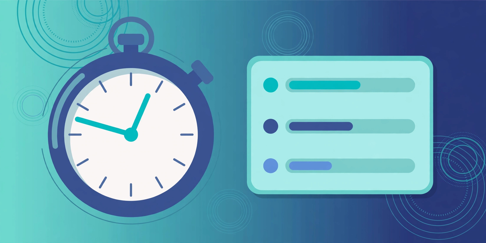

How to Use a Stopwatch Online
Time anything honestly — laps, splits and totals to a hundredth of a second, free, no signup, right in your browser.
November 1, 2026 · 6 min read

Timing something sounds trivial until you need an honest number. How long did that run really take? Was the second set faster than the first, or did it only feel faster? Did the study session last 25 minutes, or 25 minutes plus the time spent checking a phone? A glance at a clock gives a rough idea; a stopwatch gives a number to compare and improve on.
The trouble with most stopwatches is friction: opening an app, finding the timer inside it, or discovering that the free version wants an account before it starts counting. A browser stopwatch removes all of that. This guide shows you how to use one properly: what the controls do, how to read lap times, and the mistakes that make a timed result meaningless.
What the Stopwatch does
The Stopwatch counts upwards from zero and displays the time accurate to a hundredth of a second, in the form minutes:seconds.hundredths — for example, 04:15.20 means 4 minutes, 15 seconds, and 20 hundredths. One hundredth is 0.01 seconds, so the display is precise enough for sprint splits, not just for timing a boiled egg.
It has four controls, and nothing else to learn. Start begins timing, Pause freezes the clock, and pressing Start again resumes from where you paused — it does not restart from zero. Lap records a split while the clock keeps running, and Reset clears the time and every recorded lap. Each lap entry shows the lap's own time, the running total, and the difference from the previous lap, so you can see at a glance whether you are speeding up or slowing down. Everything runs in your browser, so nothing you time is uploaded anywhere.
Use the stopwatch in 5 steps
- Open the Stopwatch and check it reads 00:00.00. If it shows an old time, click Reset first.
- Click Start when you want timing to begin. Start on the action, not before it — starting early adds dead time to every result.
- Click Lap at each checkpoint. On a run, at the end of each lap; in a workout, at the end of each set. The clock keeps running, so the tap costs no time.
- Click Pause when the activity stops, and Start again to resume. Pausing keeps breaks — water, a phone call — out of your total.
- Read the laps, note the numbers you need, then click Reset. There is no save button, so copy down any lap you want before you reset or close the page.
A worked example: reading three laps correctly
Suppose you time three laps of a running route and the stopwatch shows these running totals:
- Lap 1 total: 1:24.36 — the first lap itself took 1 minute 24.36 seconds, or 84.36 seconds.
- Lap 2 total: 2:51.07 — the second lap took 2:51.07 minus 1:24.36, which is 171.07 − 84.36 = 86.71 seconds, or 1:26.71. It was 2.35 seconds slower than lap 1 (86.71 − 84.36 = 2.35).
- Lap 3 total: 4:15.20 — the third lap took 4:15.20 minus 2:51.07, which is 255.20 − 171.07 = 84.13 seconds, or 1:24.13. It was the fastest lap of the three, by 0.23 seconds over lap 1 (84.36 − 84.13 = 0.23).
The full session lasted 4:15.20, or 255.20 seconds, and the average lap was 255.20 ÷ 3 = 85.07 seconds, or about 1:25.07. Notice the trap this example avoids: the running total is not the lap time. If you had read lap 2 as "2 minutes 51" you would have thought it twice as slow as the first, when it was only 2.35 seconds slower. The tool shows both figures, but knowing what each means is what makes the numbers useful.
Stopwatch, timer, or countdown: which one do you need?
- Stopwatch (this tool): counts up from zero with laps. Use it when you do not know how long something will take and want to measure it — runs, sets, speeches, tasks.
- Timer / Countdown: counts down from a set time. Use it when the duration is fixed and you want an alarm at the end — a presentation slot, a cooking time, an exam section.
- Pomodoro Timer: alternates work and break blocks automatically. Use it when you want structure imposed on you — 25 minutes of work, 5 of rest, repeated.
- World Clock: shows the current time in different zones. Use it to schedule across time zones, not to measure a duration.
The common error is using a countdown to measure something: if you set 30 minutes and finish with 12 minutes remaining, your result is 18 minutes — but only if you did the subtraction and noticed the remaining time. A stopwatch hands you the elapsed time directly, which is the number you actually want.
5 mistakes that make a timed result meaningless
- Stopping instead of lapping. If you pause at each checkpoint and restart, you lose the time between taps, and your laps no longer add up to the total. Lap while running; pause only for genuine breaks.
- Forgetting to pause for breaks. A "45-minute workout" that includes 10 minutes of chatting between sets is a 35-minute workout. Pause for every break, or your total measures attendance, not effort.
- Reading the running total as the lap time. The total always grows, so later laps always look slower than they are. Compare lap times with lap times, and totals with totals.
- Comparing laps over different distances. A faster lap on a shorter route proves nothing. Keep the route, the task, and the conditions the same, or the comparison is meaningless however precise the hundredths look.
- Over-reading the hundredths. The display resolves to 0.01 seconds, but a human finger tap varies by far more than that. Treat differences under about half a second as a tie — the hundredths are real, but your reaction time is part of every manual reading.
Frequently asked questions
How accurate is an online stopwatch?
Its display resolves to a hundredth of a second, finer than most people need. The real limit is human: the delay between seeing an event and tapping Start or Lap is typically a few tenths of a second, so treat manual results as accurate to roughly half a second.
Does the stopwatch keep running if I switch tabs?
Keep the tab open while you time something important. Browsers slow down background tabs to save battery, which can make a background stopwatch less reliable.
Can I save my lap times?
Not in the tool itself — there is no save button, and Reset clears every lap. Note down the laps you want to keep before you reset or close the page.
What is the difference between a lap and a split?
They are the same idea viewed two ways: the lap is the time for one section alone (1:26.71 in the example), and the split is the running total when that section ended (2:51.07). The tool shows both, plus the difference from the previous lap.
Is anything I time sent to a server?
No. The stopwatch runs entirely in your browser, and its page states that no data is collected or sent anywhere.
Related tools: Stopwatch · Timer / Countdown · Pomodoro Timer · World Clock